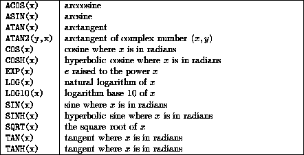

Next: Numeric Intrinsic Functions
Up: Intrinsic Procedures
Previous: Type Conversion Functions
Summary,

For more information, click here

Now try this question
Next: Numeric Intrinsic Functions
Up: Intrinsic Procedures
Previous: Type Conversion Functions
Adam Marshall ©University of Liverpool, 1996
Tue Nov 26 19:51:50 GMT 1996